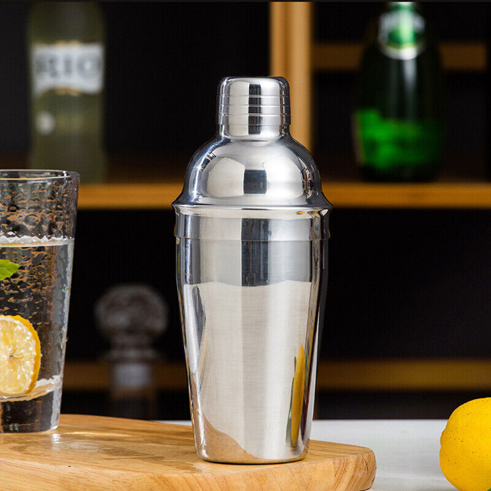

Content
Cocktail Accessories
Preparing cocktails at home – it works for passionate hobby mixologists with automated moves and professional tools. Because certain accessories simply belong in your own bar. Professional bar equipment of the highest quality is undoubtedly crucial to get the best out of your drinks. Below are the essential accessories for delicious cocktails and long drinks:
-
 Mixing Glass (for stirring): Many cocktails are simply stirred when the ingredients easily combine with each other.
Mixing Glass (for stirring): Many cocktails are simply stirred when the ingredients easily combine with each other. -

Shaker (for shaking): You need it for cocktails with special ingredients like cream or egg whites.
-
Strainer: Ice cubes and solid components are retained while pouring the finished mixed cocktail into an elegant glass.
-
 Muddler: How else would you crush the limes for a Caipirinha?
Muddler: How else would you crush the limes for a Caipirinha?
Ingredient Theory
The world of spirits is extremely diverse! From smoky whiskey and fruity rum to spicy gin, everyone can find the perfect match for their taste! Enriching this varied world with a few fresh juices, exotic fruits, and sparkling mixers makes it even more colorful and delicious - welcome to the world of cocktails! However, due to this wide variety, it's often the case that you don't have all the ingredients at home for the fancy drink you just discovered on Pinterest. That's why today we'll reveal to you the essential ingredients for your cocktails that should never be missing from your home bar!

-
Spirits: Vodka, Gin, Rum
-
Juices: orange-, lemon-, pineapple-, maracujajuice
-
Liquor: coco liquor, orange liquor, Blue Curacao
-
Syrup: grenadine, sugar syrup or honey
-
Mixer: tonic water, coke, soda water
-
Bitters: orange bitter
-
Fruits: oranges, lemons, limes
Practical Tips
DIY Sugar Syrup
You can also easily make simple syrup yourself. Boil equal parts sugar and water (e.g., a large glass of sugar and a large glass of water) and let it thicken slightly. The syrup should not become too thick since it needs to mix with other ingredients. Let the syrup cool. Done!
LIQUEUR DURABILITY
Liqueurs generally have a shelf life at room temperature, starting from an alcohol content of 15%. Therefore, bartenders don't need huge refrigerators in their bars. Storing at room temperature may only slightly alter the color and aroma. So, it's worthwhile to buy a delicious liqueur, even if you only use it occasionally for mixing cocktails.
SYRUP DURABILITY
Syrups generally last for about six months after opening. However, after opening, syrups should be stored in the refrigerator on warm summer days. An unopened bottle of syrup can last for three years.
MINT DURABILITY
Fresh mint is best stored wrapped in a plastic bag in the refrigerator.
HOW MUCH JUICE IS IN FRUITS
What every good bartender keeps in mind: whenever possible, freshly squeezed fruit juice should be used in cocktails. An orange contains at least 5 cl, a lemon 3 cl, and a lime 2 cl of fruit juice.
CREAM IN CREAMY COCKTAILS
For mixing, use regular heavy cream (about 30% fat content) from the supermarket. Pour it directly from the refrigerator in liquid form (not whipped) with the other ingredients and ice cubes into the shaker. By shaking the shaker vigorously and quickly, the ingredients will mix within around 10 seconds. To achieve the airy cream top on appropriate cocktails, remove the strainer from a three-piece shaker and pour or spoon the "airy" remnants of the mixture from the shaker onto the cocktail. For experimentation, any spring cocktails, such as the Pina Colada cocktail (Pina Colada), are suitable. Explore all the other creamy spring cocktails here.
Our Courses
If you want to learn more about mixology, sign up below for one of our courses.